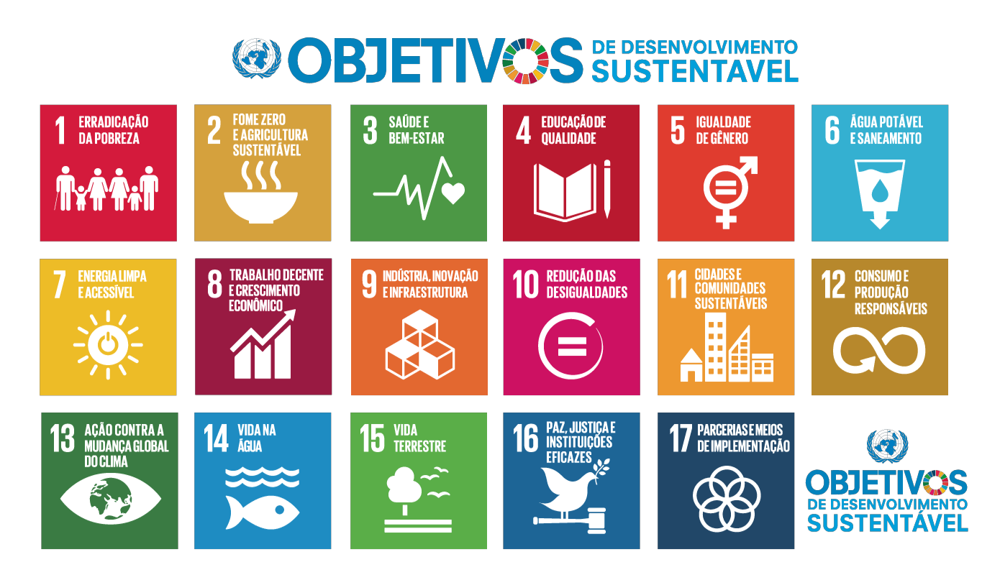

-
Construção de Infraestruturas Resilientes
Uma das metas do ODS 9 é promover o desenvolvimento de infraestruturas resilientes, inclusivas e sustentáveis para apoiar o crescimento econômico e o desenvolvimento social. Isso inclui a construção de estradas, pontes, portos, sistemas de transporte público e infraestrutura digital que sejam capazes de resistir a desastres naturais e impactos climáticos.
-
Fomento à Inovação
Uma parte fundamental do ODS 9 é o estímulo à inovação. Isso envolve o apoio à pesquisa e ao desenvolvimento tecnológico, bem como a promoção de parcerias público-privadas que incentivem a criação de novas tecnologias e soluções para os desafios globais, como a mudança climática, a saúde e a educação.
-
Acesso Universal à Internet
Uma meta específica do ODS 9 é garantir que as pessoas em todo o mundo tenham acesso universal e acessível à internet. Isso é visto como um facilitador essencial para o desenvolvimento econômico e social, pois permite o acesso à informação, à educação online, ao comércio eletrônico e à participação cívica.
O que é?
Os Objetivos de Desenvolvimento Sustentável (ODS) são uma série de metas globais estabelecidas pelas Nações Unidas para abordar alguns dos maiores desafios enfrentados pelo nosso planeta.
Eles são um chamado à ação para países, organizações e indivíduos trabalharem juntos na promoção de um mundo mais justo, equitativo e sustentável até 2030. Os 17 ODS abrangem áreas como erradicação da pobreza, igualdade de gênero, ação climática, educação de qualidade e muito mais.
Essas metas visam melhorar a vida das pessoas e proteger o meio ambiente, buscando um futuro onde ninguém seja deixado para trás e onde o desenvolvimento seja verdadeiramente sustentável. Junte-se a nós na busca por um mundo melhor!

Todos os ODS:
Sobre ODS9
O ODS 9, ou Objetivo de Desenvolvimento Sustentável 9, é uma das metas estabelecidas pelas Nações Unidas para promover um desenvolvimento sustentável em escala global. Este objetivo foca na construção de infraestruturas resilientes, na promoção da industrialização inclusiva e sustentável, no fomento à inovação e no acesso equitativo à tecnologia.
O ODS 9 visa impulsionar o crescimento econômico, a criação de empregos de qualidade e o fortalecimento das capacidades produtivas, ao mesmo tempo em que busca garantir que esses avanços sejam alcançados de maneira ambientalmente responsável.
Ao investir em infraestrutura, tecnologia e inovação, o ODS 9 busca melhorar a qualidade de vida das pessoas, promover a igualdade e contribuir para um futuro mais sustentável para todos. Junte-se a nós na busca por um mundo onde o progresso seja sinônimo de responsabilidade social e ambiental.